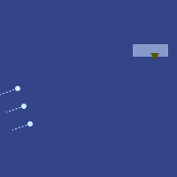
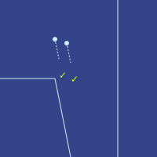

Zei, Bai, Gladias and Den were sitting in a small enclosed cabin in an aeroplane, with Zei and Bai facing forward and Gladias and Den facing backward. All four were looking silently out the window, enjoying the view of a mostly flat, green landscape. The main visible features were a row of small mountains and the city of Meldan further in the background.
An announcement alarm buzzed. The four of them snapped out of their trance-like state, and prepared to listen.
jo hen jei fe fei go de di mei dan du
"Your turn to translate, Gladias!", Zei prodded.
Gladias scrambled in his mind to understand the words quickly enough to give the answer before the next sentence began. After a few moments, he blurted out:
"Everyone, welcome to Meldan, Veridia."
ti zun no tei li ze fo fi shi ci cin ho li ze ci bia tei gei ka fiu den min ba fia zui
"The local time is 74,000 and the temperature is seven degrees. After a short time, the flying machine will descend to the ground."
ti tei li dzai hen fe lo kin fe hai bun
"Now is a great time to look at the beauty outside."
hai ka sho kin ce fe fei go de bun ji dze kai zui liu
"Outside right now, you can see Veridia's beautiful earth sheet of green plants."
"Landscape of green plants", Zei corrected gently.
biu ka di ge le bo gai dei li lia
"On the right, there are the Gelebor mountains."
cen hai ka ge le bo gai dei de dziu hai ka ce kin fe di mei dan du ci ti li sa dzu du fe fei go
"Far outside, continuing beyond the Gelebor mountains, you can see the Meldan city. This is the capital city of Veridia."
di mei dan du li bai
ci di mei dan du de jan zi li pa pi pa fi ha
ci dzen fe gi hie pen
"Meldan is a large city. The population of Meldan is 1.1 million. It has many different districts."
dzu ka kin ce fe bia gai dei
ci fia sai pen ka dan fe gi jan
ci sei sai pen ka jen bin pei de pen li pai
ci mui dau fe ti li cin pin cu bun
"In the center there is a small mountain. In the lower half there are many people's homes. In the upper half part of the government works. Hiking up it is happy and beautiful."
gai dei de zei biu ka pai hui pen li bia
ci pai hui pen fei ka fei go de gi bai pai hui li lia
ci sa dzu pai hui li dzen fe ten min de bin dai cu man jei cu su kun gau
"East of the mountain, there is the business district. In the business district there are many large companies. The main industries include computer software, finance and health protection."
gai dei de zei gei ka di ka lia mai pen li lia
ci ti pen li lu fe bai kai zun
ko ti dzen fe gi pui gau ji dan
"South of the mountain, there is Kalimar district. This part looks like a forest, but it contains many hidden homes."
gai dei de zei dzun ka gi dan pen li lia
co ti ka gi jan li san cu sun cu mo
ci ti ju fe gi kai de sai hui cu gi dau kin zun
"West of the mountain, there is a large residential district. Many people sleep, learn and eat here. It has many categories of food and many go-and-see places."
"Tourist attractions."
ti li tin bia pen fe di mei dan du de ce kin ji gi mui sun jui
ci di mei dan du fei ka ji gi shan jin tei ka jan ki su
te zen hu ka ki kia sin fe ti du
"This was only a small part of the many interesting things in Meldan. Even if a person lives for years in Meldan, they will not know the city completely."
jie fe lo cin pin fe lo di mei dan du cu fei go li bun
"We hope you enjoy Meldan and the beauty of Veridia."
"Well done. Only two months and you're almost a local already."
Zei paused for a moment, and then opened his mouth again to speak slowly.
"ci jie fe lo cin pin fe di pa fo gai du"
"I enjoyed Pafogai Du very much."
"I hope you come back."
"Of course I will!"
"Wait, I just realized ... Pafogai means 'fourteen stone'? Where did that name come from?"
"Think of the periodic table."
The aeroplane came to a stop. Through the window, they could see over a dozen large autobuses and cars approaching.
"The larger black one is ours. We'll exit last, for our privacy", Den stated.
Zei, Gladias and Bai nodded. The four of them reclined back in their seats and waited.
About ten minutes later, the door to their cabin automatically opened. The four of them immediately stood up, grabbed their carry-on bags from under their seats, and walked toward the front of the aeroplane. As they passed through the aeroplane, they could see all of other cabin doors already open and empty, with used blankets and empty bottles and cups littering many of the tables and seats.
They exited the aeroplane though a doorway that was directly connected to a staircase, and then to a narrow room that was clearly also the inside of an autobus. The room had an entrance, which they had just passed through, an exit on the other side, and two passage gates blocking the way in the middle.
Zei and Gladias stepped forward first. They each put their watches against the green circle on the side of the gate they were passing through, and looked at the camera in front. A few ticks later, almost in unison, both gates announced: "Welcome to Veridia."
The gates opened, and Zei and Gladias stepped through. The exit at the other end of the room led straight into the interior of one of the large black cars that they had seen earlier through the window of the aeroplane. They both stepped in, and found another man already sitting inside.
"Senator Verdow!"
"Welcome home, Gladias!", Verdow replied, with a facial expression and tone warmer than Gladias had ever heard him. He immediately looked to Gladias's side. "And you must be Zei."
"It's a pleasure to meet you, Senator."
As Zei and Gladias were sitting down, Zei could already hear the footsteps of Bai and Den approaching. They also stepped through the opening and entered the car.
"And you must be Bai and Den!"
"We are indeed", Bai replied.
"Well, let's sit down. We have a lot of work to do."
All four of them sat down in their seats. The opening linking the car to the entrance room closed. Almost immediately they could feel the car start to accelerate.
"So first of all, Gladias, I have some very good news for you."
"Oh, what is that?"
"Looks like we know where Lily is."
Gladias's eyes opened.
"Seila pushed really hard and got in touch with me, she told me the whole situation. Zven stayed in touch with Lily, and she admitted to him where she was: she had crossed over into Arctic-occupied territory and was in Northglade."
"We then scanned through all the feeds the security cameras that you so brilliantly suggested the Dzegojan should hack into. After a few days, we found her. She is in some kind of boarding school that the Arctics set up. About one kilometer away from the GPH."
Gladias sighed. "At least we know where she is. It's going to be difficult to get her out of Northglade, but at least that's also the place Febric and Hreda are, so we can get them all together."
"Indeed. If you really wanted to, you could even go to Northglade now - though the doors to the GPH are still closed."
"The Arctics recently started allowing communication and travel both ways between Northshore and the rest of Veridia. They opened up clinics in Northglade offering some of their most advanced treatments, for both longevity and performance enhancement. Looks like they've decided to try to get Veridians to join the Arctic Empire voluntarily, by offering us their shiny technology."
"It's a good strategy."
"What was your line, Zei? Manipulating someone to do something by just showing them how it's in their interest, is just convincing?"
"That's definitely how Ephelion would see it. Of course, Sylka would get upset and say they're hiding the hidden cost - if you can live longer but it depends on ongoing infusions of proprietary Arctic medicine, you become dependent on them for your life, you become their slave. Though Ephelion would say that being dead - being inside a coffin where you are not free to move a single muscle or think a single thought - is the worst slavery of all. And that that's not just true for a person, it's true for a civilization."
"If we want Veridia to succeed and thrive, we have to find the synthesis. We can admit that the Arctics do some things very well, and that their striving for a radically better future can be healthy. Veridia's north star cannot be to just stay the same as we are but with less greed and a better social fabric. We need to have actual progress, and take the good parts of it without the bad. We need to recognize success, and reward it."
"But first, we have to give ourselves breathing room. And that means defeating the Arctics in Northshore."
"Exactly. And to do that, we have to be willing to learn from the outside - learn from our enemies in the Arctic Empire, and from our friends in Freetown and Dzego."
The car slowly came to a stop. A few moments later, the doors opened, leading straight into the inside of what looked to be a government-run hotel.
"Get a good sleep, friends. Zei, Den, the two of you have a big day tomorrow morning. And then once that's done, we'll meet and talk about our big plans. Veridia ba fau gie."
Gladias and Zei stepped out of the car first. Almost immediately, Gladias could see a woman waiting in the far corner of the room. She turned toward him, and began running toward him with outstretched arms.
It was Seila.
Meldan, Veridia · 3724 Frostime 6
Zei sat down on a chair, in front of a console that looked remarkably similar to the consoles on which he had played all of his championship Minpentai games. The main difference that he could see was that this time, there were no anti-cheating detection drones buzzing around.
He put on the earpiece and glasses, and spoke into the microphone.
"Can you hear me, Den?"
"Yep, loud and clear. I think I'm in the room right below you."
Zei playfully stomped his feet.
"Can you hear that?"
"I'm only hearing your voice through the earpiece."
"I guess your soundproofing is very good!"
"Okay, Zei, let's go through the whole operation again."
"Location: Redshire, presidential residence. Goal: rescue our target - Tafindel, the president's son. Strategy: our man on the inside asks the target to step out onto the balcony. We fly in, drop down a rope for him to tie around his waist and hold on to, fly out before the Arctics can do anything."
"Exactly, that's the mainline plan. Now what are the contingency plans?"
"If Arctics appear - soldiers or drones - we shoot them. If he doesn't step out onto the balcony, no backup plan, we're screwed - our drones won't survive if they have to land directly on the building. If the drone with the rope gets shot down, we have a second drone, and potentially even the other combat drones could pick the target back up, though they're not as well-designed for it. The only dangerous window is if the drone gets shot down within a few ticks after it picks him up - too soon for the backup drones to swoop in and grab him before he hits the ground."
"What's my responsibility?"
"Supervising the mainline plan."
"What's yours?"
"Supervising the combat and the contingency plans."
"Mu, are you here?"
"I am indeed. I'm supervising the surveillance, I'll make sure we learn about anything unexpected as soon as possible."
"Mu, how did you get here!?"
"I was on the same aeroplane as you yesterday, Zei. Just in a different cabin, and different car going into the city. Privacy precautions."
"Well I'm happy to see you! Or, at least, hear you."
Zei checked the various numbers in the display that was being blasted into his eyes through the glasses he was wearing.
"Fi le gei tau fa", he exclaimed, mimicking the voice of the announcer that would count down to the beginning of each Minpentai game.
He then consciously switched his mood to be entirely focused on the battle that was very soon to begin.

Zei stared intently at the screen as the drones came closer to the parliament building and more drones appeared onscreen.
Twenty ticks later, the dark yellow triangle onscreen turned into a brighter yellow checkmark. Tafindel stepped out onto the balcony, exactly on schedule.
Thirty more ticks passed.
"mu gu gei tau fa", he said softly. Battle starts in fifty ticks. In some sense, the battle had started already, but the moment he was waiting for was the moment Tafindel would grab hold of the rope. That is when the real challenge would begin, he thought.
Twenty more ticks passed.
Suddenly, the checkmark turned back into a dark yellow triangle.
Zei zoomed in to the video feed. Someone had grabbed Tafindel, and pulled him back inside.
And almost at that same moment, Arctic drones started shooting.
Zei could immediately hear Den's words blasting through his earpiece.
"I'll figure out what happened to the target. Zei, supervise the battle."
Zei subconsciously nodded. The headset automatically translated the nod into a checkmark icon, which flashed onto Den and Mu's displays.
Zei groaned. Three of his drones had already been hit.
"Evasive action, return fire at hostiles. All damaged drones, if you are still functional, descend to ground and play dead."
Arctic surveillance was more powerful than he had thought, he realized.
At that moment, an X appeared above a fourth one of his drones - the drone that had been intended to grab the target. A tick later, that drone disappeared completely from the display map. Zei checked the raw visual feed. It had been directly hit, and exploded in midair.
Zei screamed with despair. The evasion tricks that they had learned from their previous missions were not helping. It looked like the mission was going to fail - and perhaps with it, the Kungaupei's credibility.
The next moment, through his earpiece, he heard Mu speaking intensely.
"New plan. Everyone fly low, under the buildings and trees. Fly through the streets. That's where their firing ability is weakest. Then I have a trick up my sleeve."
Zei nodded, and passed along the instruction to all drones. Within ten ticks, the four surviving and fully functional drones were all near ground level. An additional damaged drone, which Zei had instructed to play dead, was already at ground level - it had been there for over half a minute.
Suddenly, Zei could see in his visual feed the streetlights and the lights inside the buildings all blinking chaotically. Arctic drones started firing in all directions, confused about where their adversaries were.
His drones kept flying forward. As soon as one got within a hundred meters of the presidential residence, Den spoke up.
"I need a crash at these coordinates."
A new yellow triangle appeared on the side of the building. Zei immediately directed his drone to crash there at full speed. Four ticks later, it did, and there was a large explosion and smoke.
Ten ticks after that, the yellow triangle turned into two bright yellow checkmarks.
Zei was confused, but immediately did the only thing that made sense. The drones were too low for the rope to work. Instead, he directed two of the three remaining drones to slow to a stop, right in front of the presidential residence.
Both checkmarks turned green. The drones accelerated again, and sped ahead. Zei directed the third drone to hold back, and fire on all Arctic drones that it could detect.
He checked the visual. On each of the two drones that were flying off, someone was holding on tightly to their backs. One was Tafindel, and the other was their man on the inside - his assistant. They were both wearing thermal cloaks. Good job Den, Zei thought.
Zei continued to watch the screen intently. Somehow, against all odds, they seemed to have done it?
Den cleared his throat and began to speak.
"This is not going to work", he muttered. "I see more Arctic drones coming in. They are faster, they will catch up."
Mu immediately responded.
"Already on it. The targets will jump off the drones soon, the drones will keep going. The targets will be told to run two hundred meters to a road - NOT the road closest to them. I have a car coming to pick them up. With luck, they will be tens of kilometers away before the Arctics know what's going on. Once they get to the shore, a sea drone will come and take them out of Redshire."
Zei sighed. "I trust you, Mu."

Zei sat back down on his chair and sighed, feeling deep disappointment at himself. He closed his eyes.
A minute later, the first good news:
"Pickup successful."
Another ten minutes later:
"Our drones touched down at a large shopping complex in Dolinar. Arctics are closing in on them. Hopefully the manhunt will take as long as possible."
Another thirty minutes later:
"Our car reached the shore without incident. Targets now entering the seaborne drone."
Ten more minutes after that:
"The Arctics realized that we tricked them. They are broadening their search."
Zei watched the screen, which was at this point showing the slow grinding progress of the seaborne drone making its way westward away from the Redshire coast.
Fifty minutes after that:
"The targets have successfully arrived on the coast of Arturia."
"I'm so sorry guys", Zei muttered softly. "I failed completely, and if it weren't for Mu somehow saving us with a completely new plan, we would have failed, and probably everything else we're planning would have failed too."
"Welcome to real life warfare, Zei", Den replied. "It's not like Minpentai. Sometimes the only way to win is to think completely outside the box. Not outside the box as in figuring out some clever way to encode an entire computer inside of a glider structure, but outside the box as in, jumping out of your console chair and running over and bashing the other player in the face."
"So ... Mu, what did you do there?"
"This is not the Arctic Empire, this is Redshire. There are lots of people there who quietly support us, and a lot of the technical infrastructure has still not been shifted over to full Arctic control. So for the moment, it's still possible to break into some things. I have a bunch of admin passwords that people from Redshire gave me. I used them to first take control of the streetlights, and then to commandeer a few dozen automated cars. There were actually multiple decoys, the planes stopped and restarted in a few places. We should have done this plan all along, but - I underestimated the extent of Arctic surveillance as much as you did."
"It was truly an amazing job, Mu."
"But what matters is that we won. Tafindel is safe in Arturia. The Arctics have been humiliated. The whole world now knows that they can be defeated."
Den paused, and then began to speak again.
"For the moment, they think it's just Freetown's defense companies. But now it's time for the Kungaupei to stand up and take its share of the credit. And then see if the Veridians are up for giving Veridia the defense that it deserves."
Gladias slid open the door to the booth, and stepped in. Five judges that Mov and Seila had helped to identify - with significant help from surveillance cameras that had been backdoored by Dzego - were already sitting inside.
"So what is it that you wanted to talk about?", the first judge asked.
Gladias sat down, and slid the booth door behind him.
"I am planning to open a case against the Veridian military leadership. Under the fourteenth Ground Law, the Veridian military is required to defend Veridia. As we have seen from what happened in Northglade, they have completely failed to do this. And so I am arguing that they have broken the law, and should be fired."
"That's crazy. Yes, we were caught by surprise in Northshore and lost pretty badly. But the Veridian military are doing the best job they can in a difficult time. We can't just come in from the outside and say we don't like how they're doing their job and replace them, when we don't even know what standard we're comparing them to-"
"Caeron", Gladias interrupted. "Did you see in the news what happened today?"
"I did not. Come on, Gladias, you know it's a rule that judges should not read the daily news. We're here to apply timeless principles, not get swayed in every direction by crowds of people getting angry in the moment."
"A Dzegojan group flew into Redshire and successfully rescued the president's son."
Almost immediately, another judge began to reply.
"So you want us to replace the Veridian military leadership with some Dzegojan?"
"Yes, exactly."
"I'm sorry, this is insane. That's not the court's job. Veridia is a democracy. The people in charge of the military, who can change the composition of the military, are the parliament. So if you want to try your crazy scheme, you should go talk to them."
"Come on, Sewlert, you know as well as I do that the parliament is corrupt. They're either already inside an Arctic-engineered bubble of propaganda, or bribed, or have them or their families threatened thanks to the Arctics having broken into our surveillance systems."
"We're a court. We don't have the right to just go and decide the entire parliament is corrupt."
"Actually, you do. Twenty-first Ground Law. Veridian government officials are required to perform their duties honestly, in good faith and without undue influence, and report and resign if any undue influence befalls them."
"So you want us to fire the parliament too?"
"If necessary, yes."
Gladias could feel that he was not getting through. So he decided to try a different line.
"Do any of you have family in Northshore?"
A third judge spoke up.
"I do, a son. He's in the GPH, that's the one place that they are still blockading and not letting people leave from."
Caeron turned angrily toward him.
"Why are you bringing this up? Gladias said it himself, we're required to perform our duties without undue influence."
"Six percent of the Veridian population is in Northshore. Each person has about ten close family members - parents, siblings, children, spouse, other close relations, co-parents. So among the five of you, that's fifty total, so statistically, there should be three of your family members total in Northshore. If you have none, then you're not feeling something that many other Veridians are feeling. So your interests are misaligned. You're misaligned toward compacency, but is that not also a form of undue influence?"
"That's not how those laws work, there are precedents about it."
"Do you have family in Northshore? If so, then you are the one with the undue influence."
"Now you're getting the law wrong. Plaintiffs are allowed to have a stake in the outcome - in fact, they're required to. The legal term for that is standing."
"And yes, I have three children there."
"Look, Gladias. Again, Veridia is a democracy. We are not going to stomp our feet over our democracy just because a bunch of Dzego-man whiz kids rescued a prince and you think you're smarter and more morally pure than the entire parliament."
"And even if we did, just think about the procedure. A case takes a minimum of thirty days from start to finish, and that's if the judges don't decide that it needs to take longer. And then they can appeal, multiple times. Appeals can be shorter, but only from the third round. So it will take months for all this to resolve. And in the meantime, Veridia will be in chaos, and the Arctics will just swoop in and take over."
"So we're not doing this."
Gladias looked around. Three of the other four judges were nodding along to what Selwert was saying. The remaining judge, Zevin, seemed much more sympathetic to Gladias - no doubt in no small part because he also had a son stuck in Northglade - but he did not seem to feel comfortable expressing his opinion.
"Understood", Gladias said softly. If this sample of judges was that hostile to his pitch, the sample of judges that he would get if he launched a real case would almost certainly be quite hostile too. He needed a different strategy.
He slid open the door to the booth, and slowly exited.